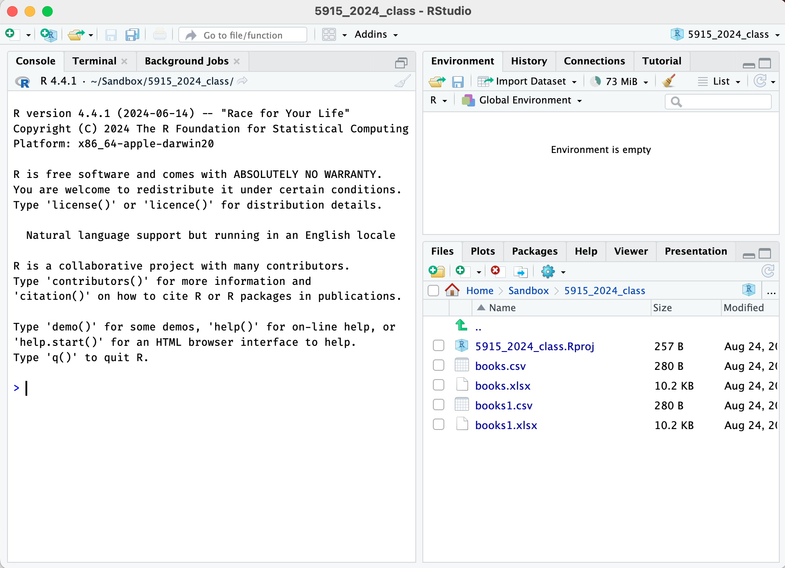

Setting up R and Rstudio
setup.RmdInstalling R and Rstudio
Download and install both R and Rstudio. See links here: https://posit.co/download/rstudio-desktop/
You need both; “R” is the software underneath that actually does the work; “Rstudio” is the interface that makes the doing the work much easier.
For Fall 2024, you should have R version 4.4.1 and Rstudio version 2024.04.2 Build 764. You can check the version of R by checking the Console pane when you start Rstudio, and the version of Rstudio using Help > About Rstudio. You can also use the following commands in the console.
R.version.string
RStudio.Version()$versionInstalling packages
R has many add-on packages that allow one to do more specialized
tasks or make every-day tasks easier. We’ll be using a set of packages
called the tidyverse, and a package specifically for this
course called umncvmstats (which needs the
devtools package for installation.)
To install them, start Rstudio and run these three lines in the console, one at a time. (The console is in the left pane; we’ll do a fuller introduction to the other panes later.)
Each of these lines will download and install not only the package, but all other packages that it depends on it, so it can take a while (minutes, not hours).
The devtools installation may give you a warning about
Rtools; this can be ignored.
install.packages("tidyverse")
install.packages("devtools")
devtools::install_github("AaronRendahl/umncvmstats")You only need to run these lines once, you do not need to run them every time you open R.
However, I may ask you to reinstall the umncvmstats
package during the semester; it’s possible as the class uses it, we’ll
find things that need to be updated.
For updated installations only:
If you had a previous version of R that you recently updated to most recent version, you should also make sure that all your packages are updated, using this code.
If you just did installed R for the first time, this is unnecessary.
update.packages(ask = FALSE, checkBuilt = TRUE)Setting preferences
There are three important preferences to set.
Under the Tools menu, select Global Options.
-
For General (on the left side), and Basic (on the top):
Unselect “Restore .RData into workspace at startup”.
For “Save workspace to .RData on exit” select “Never”.
This preference is important as it prevents R from remembering anything from session to session. Although that sounds like a good idea, it can make your work very difficult to reproduce.

-
For “R Markdown” (on the left side),
- Unselect “Show output inline for all R Markdown documents”.
I suggest you start this way, as that’s what I’ll demonstrate, but you’re welcome to try inline output and see if you prefer it.

File Management
To be able to work with data files and R, you need to be able to be use your file manager (Finder on Mac) to navigate to files and folders, move and rename files, and find and open files you’ve downloaded.
Let’s set up a folder for you to use for all your R code and assignments in this class, and practice downloading some test files and moving them to this folder.
Close Rstudio before doing this; these are tasks in your web browser and file manager, not Rstudio.
Decide where you want your files for this class to be and use your file manager to create a new folder there. Computers sometimes have issues with spaces in filenames, so I recommend using only letters, numbers, and underscores for the name of this folder. For example,
VMED5915_Fall2024.Download the following file and move it in this folder. On most systems it will default to saving in a “Downloads” folder; find the file there and move it to the folder you just created. You may also be able to use “Save File As” to save it there directly.
- http://www.stat.umn.edu/~rend0020/5915_data/books1.csv
- http://www.stat.umn.edu/~rend0020/5915_data/books1.xlsx
- You also may need to download files from Google Drive. That can be a
little different, so let’s try that too. Go to this Google Drive folder
and download the
books.csvandbooks.xlsxfiles, and move them to your class folder.
You should now have four test files in your folder for this class; we’ll try opening them later.
Note that I’m having you put all your files in the main folder; if want to use subfolders, ask about the “here” package, which helps your files to be found no matter how your files are arranged.
Creating a Project
Now that you have a folder for this class, you need to tell Rstudio
that that folder is the one you want to use for everything. In Rstudio,
this folder will be called a “project”. Using a project really helps
with reproducibility, and helps Rstudio find the files it needs to work
properly (though it can have trouble with subfolders, so if you want to
use subfolders, ask about the here package).
- Open Rstudio and go to File > New Project. Then select “Existing Directory” and choose the folder you created for this class.
This will create a new file ending in Rproj in the
folder you created and open Rstudio in that project folder. Check to
make sure it’s in the desired project by looking at the upper right
corner of Rstudio, it should say the name of your folder there.
In the lower right pane you should also see a list of the files in this folder, which should include the Rproj file that Rstudio just created, along with the files you downloaded earlier.
Starting R
It’s important that every time you start Rstudio to work on things for this class that you open this project file. There’s (at least) two ways to do that; you can either use your file manager to find the folder you created and open the Rproj file; assuming your installation worked properly, that should open R within that project. Alternatively, you can use the File > Open Project or File > Recent Projects menus. These can also be found in the upper right where the current project name is shown.
- Try closing Rstudio and reopening it in the project for this class. Check the upper right corner and the files pane to make sure it’s open properly.
I recommend one of those methods for opening a project, especially when one has multiple projects. However, if you want to always open in this specific project, use the preference in Tools > Global Options > General > Basic to set the “Restore most recently opened project at setup” option.
Introduction to the Panes
When you first open Rstudio, you’ll see three panes, each with several tabs.
The left pane is for the console; this is where you’ll type commands and view text-based output. I expect us to only use this tab in this pane.
The upper right pane is for the “Environment”; this shows a list of the objects that R has in memory at the current time. I expect us to only use this tab in this pane.
The lower right pane is for the “Files” in the current project; this is also where plot-based output will appear (in the “Plots” tab), formatted output will appear (in the “Viewer” tab), and help will appear (in the “Help” tab). You can also see (and install) packages from the “Packages” tab.
When files are opened or data sets are viewed, the console pane will drop to the lower left, and a fourth pane will appear in the upper right, with tabs for the files and data sets.

Opening data files
Finally, we’ll confirm that R can open each of the files you downloaded earlier. Run the following lines in the console. Running the first two lines, to load the excel files, should result in no output; running the second two lines, to open the csv files, should output the number of rows and columns and the column specification.
d1 <- readxl::read_excel("books.xlsx")
d2 <- readxl::read_excel("books1.xlsx")
d3 <- readr::read_csv("books.csv")
d4 <- readr::read_csv("books1.csv")In the upper right pane, click on the environment tab, and then click
on the names d1 through d4 in turn; they
should each open a tab in the top left pane to display the spreadsheet.
(Be sure to click on the name to open the tab; clicking on the arrow
will instead expand a list of the variables, which can also be useful.)
They should all have four variables, volume,
area, weight, and cover.

Note that you can’t edit data directly in Rstudio using this view; this is only for viewing the data set. That might seem odd, but as we’ll see, we’ll only interact with R using typed commands to ensure reproducibility.
Assuming that worked, you can delete these test files. Use your file manager to do so, and then click the circular arrow in the top right of lower pane (on the Files tab) to update the listing of the files in Rstudio. There’s also some rudimentary file operations available in that pane, but not as robust as in your file manager.
Your R/Rstudio setup should now be ready to go!